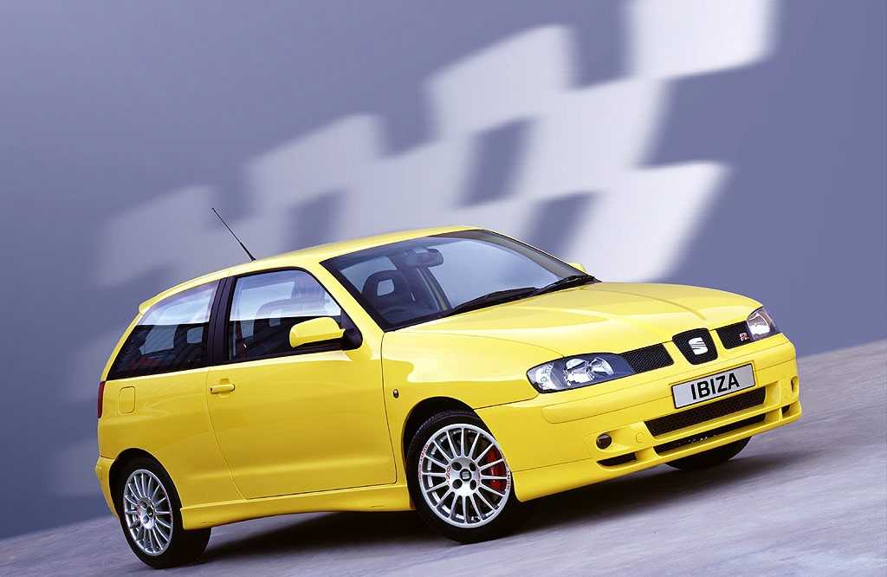
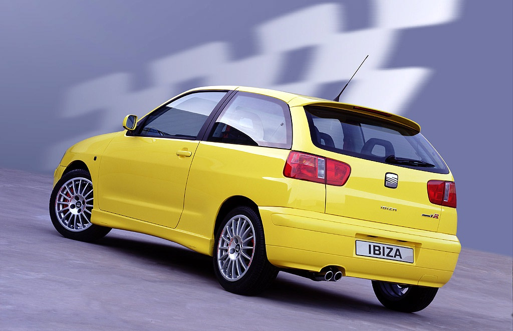
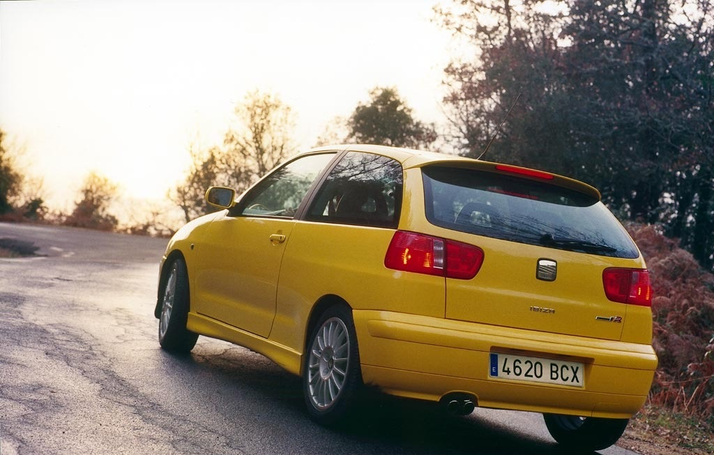

Seat Ibiza - El más popular
13/09

El SEAT Ibiza es un automóvil de turismo del segmento B producido desde 1984 por el fabricante de automóviles español SEAT. Su nombre viene dado por la isla Ibiza, situada en las Islas Baleares (España). El Ibiza es el automóvil de SEAT más vendido y, probablemente, el modelo más popular de la marca. Desde 1984 se han vendido más de 5 millones de unidades entre todos sus modelos. Por el momento abarca 5 generaciones, la última presentada en 2017
Seat Ibiza - Ilimitado
13/09

El SEAT Ibiza Cupra R es una serie limitada de 200 unidades, Con el motor turbo de 180 CV, una velocidad máxima de 225 km/h y una aceleración de 0 a 100 km/h en 7,2 segundos, el nuevo SEAT Ibiza Cupra R pasa a ser el modelo más rápido y potente entre los pequeños deportivos de tracción delantera, superando en prestaciones al hasta ahora líder, el Renault Clio Sport 2.0 16V (169 CV, 220 km/h y 7,3 segundos de 0 a 100 km/h).
Seat Ibiza - Exclusivo
13/09

El nuevo Ibiza Cupra R ha sido desarrollado por SEAT Sport, el departamento de competición de la marca española, que tras tomar la decisión de abandonar el Campeonato del Mundo de Rallies a partir del 2001, ahora se dedicará a realizar nuevas creaciones de venta al público con enfoque rabiosamente deportivo. El Ibiza Cupra R es su primer modelo «de calle», con R de «racing», con sabor a competición y con un toque de exclusividad marcado por el limitado número de coches que se van a fabricar: tan sólo se comercializarán 200 unidades del SEAT Ibiza Cupra R para toda Europa.